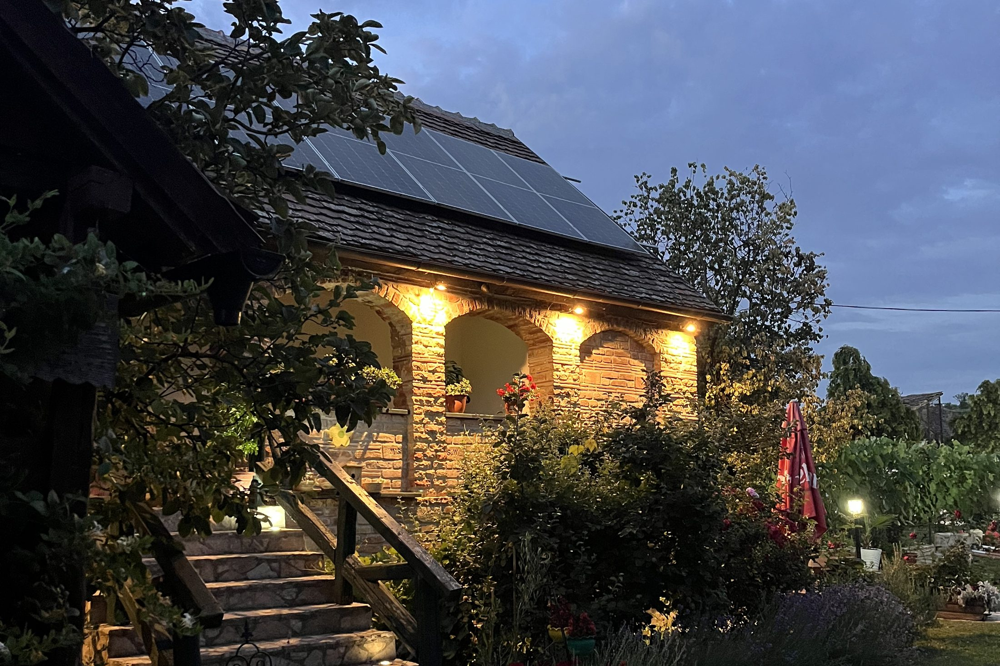

Vrdnik · Fruška gora
Kuće
Dve kuće u istom dvorištu. Uzimaju se zajedno kada dolazi veće društvo, ili svaka za sebe.

Dve kuće, jedno dvorište
Dvosobna kuća
Dve spavaće sobe, bračni krevet u jednoj i dva kreveta u drugoj, sa sopstvenim kupatilom i potpuno opremljenom kuhinjom.
Jednosobna kuća
Mesto od dva kreveta, uz koje ide potpuno opremljena kuhinja i kupatilo.
Zajedno ili svaka za sebe
Imanje se izdaje jednom društvu, pa dvorište, bazen i podrum ostaju vaši u oba slučaja. Recite koliko vas je i naći ćemo raspored.
Rezervacija
Proverite da li je vaš datum slobodan
Pošaljite datum i broj gostiju. Javljamo se istog dana, sa svim što treba da znate pre nego što se odlučite.